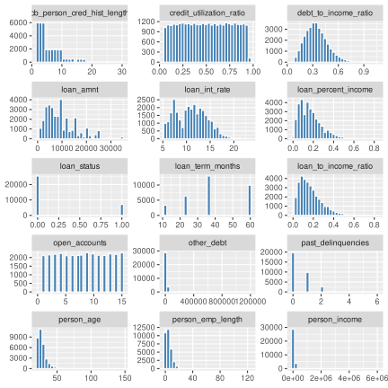
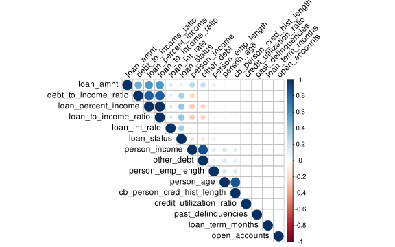
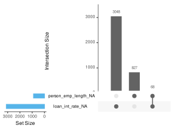
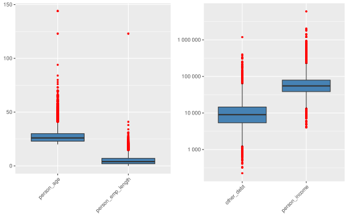

dataset <- readxl::read_excel("Credit_Risk_Dataset_Onyx_Data_September_25.xlsx")Exploratory Data Analysis of Credit Risk Dataset
1 Load Data
2 Basic Descriptives
dataset |> skim()| Name | dataset |
| Number of rows | 32581 |
| Number of columns | 29 |
| _______________________ | |
| Column type frequency: | |
| character | 12 |
| numeric | 17 |
| ________________________ | |
| Group variables | None |
Variable type: character
| skim_variable | n_missing | complete_rate | min | max | empty | n_unique | whitespace |
|---|---|---|---|---|---|---|---|
| client_ID | 0 | 1 | 10 | 10 | 0 | 32581 | 0 |
| person_home_ownership | 0 | 1 | 3 | 8 | 0 | 4 | 0 |
| loan_intent | 0 | 1 | 7 | 17 | 0 | 6 | 0 |
| loan_grade | 0 | 1 | 1 | 1 | 0 | 7 | 0 |
| cb_person_default_on_file | 0 | 1 | 1 | 1 | 0 | 2 | 0 |
| gender | 0 | 1 | 4 | 6 | 0 | 2 | 0 |
| marital_status | 0 | 1 | 6 | 8 | 0 | 4 | 0 |
| education_level | 0 | 1 | 3 | 11 | 0 | 4 | 0 |
| country | 0 | 1 | 2 | 6 | 0 | 3 | 0 |
| state | 0 | 1 | 2 | 10 | 0 | 9 | 0 |
| city | 0 | 1 | 6 | 13 | 0 | 18 | 0 |
| employment_type | 0 | 1 | 9 | 13 | 0 | 4 | 0 |
Variable type: numeric
| skim_variable | n_missing | complete_rate | mean | sd | p0 | p25 | p50 | p75 | p100 | hist |
|---|---|---|---|---|---|---|---|---|---|---|
| person_age | 0 | 1.00 | 27.73 | 6.35 | 20.00 | 23.00 | 26.00 | 30.00 | 144.00 | ▇▁▁▁▁ |
| person_income | 0 | 1.00 | 66074.85 | 61983.12 | 4000.00 | 38500.00 | 55000.00 | 79200.00 | 6000000.00 | ▇▁▁▁▁ |
| person_emp_length | 895 | 0.97 | 4.79 | 4.14 | 0.00 | 2.00 | 4.00 | 7.00 | 123.00 | ▇▁▁▁▁ |
| loan_amnt | 0 | 1.00 | 9589.37 | 6322.09 | 500.00 | 5000.00 | 8000.00 | 12200.00 | 35000.00 | ▇▆▂▁▁ |
| loan_int_rate | 3116 | 0.90 | 11.01 | 3.24 | 5.42 | 7.90 | 10.99 | 13.47 | 23.22 | ▇▇▆▁▁ |
| loan_status | 0 | 1.00 | 0.22 | 0.41 | 0.00 | 0.00 | 0.00 | 0.00 | 1.00 | ▇▁▁▁▂ |
| loan_percent_income | 0 | 1.00 | 0.17 | 0.11 | 0.00 | 0.09 | 0.15 | 0.23 | 0.83 | ▇▅▁▁▁ |
| cb_person_cred_hist_length | 0 | 1.00 | 5.80 | 4.06 | 2.00 | 3.00 | 4.00 | 8.00 | 30.00 | ▇▂▁▁▁ |
| city_latitude | 0 | 1.00 | 45.41 | 7.64 | 29.76 | 40.71 | 46.81 | 51.51 | 55.95 | ▃▂▅▅▇ |
| city_longitude | 0 | 1.00 | -63.81 | 46.62 | -123.37 | -96.80 | -75.70 | -3.94 | -0.13 | ▆▆▃▁▇ |
| loan_term_months | 0 | 1.00 | 38.50 | 16.01 | 12.00 | 24.00 | 36.00 | 60.00 | 60.00 | ▂▃▇▁▆ |
| loan_to_income_ratio | 0 | 1.00 | 0.17 | 0.11 | 0.00 | 0.09 | 0.15 | 0.23 | 0.83 | ▇▅▁▁▁ |
| other_debt | 0 | 1.00 | 11567.96 | 13060.93 | 225.21 | 5387.17 | 8995.07 | 14562.93 | 1187998.91 | ▇▁▁▁▁ |
| debt_to_income_ratio | 0 | 1.00 | 0.35 | 0.13 | 0.06 | 0.25 | 0.33 | 0.42 | 1.05 | ▅▇▂▁▁ |
| open_accounts | 0 | 1.00 | 8.04 | 4.33 | 0.00 | 4.00 | 8.00 | 12.00 | 15.00 | ▇▇▇▇▇ |
| credit_utilization_ratio | 0 | 1.00 | 0.50 | 0.26 | 0.05 | 0.28 | 0.50 | 0.73 | 0.95 | ▇▇▇▇▇ |
| past_delinquencies | 0 | 1.00 | 0.51 | 0.71 | 0.00 | 0.00 | 0.00 | 1.00 | 6.00 | ▇▁▁▁▁ |
dataset |> glimpse()Rows: 32,581
Columns: 29
$ client_ID <chr> "CUST_00001", "CUST_00002", "CUST_00003", "…
$ person_age <dbl> 22, 21, 25, 23, 24, 21, 26, 24, 24, 21, 22,…
$ person_income <dbl> 59000, 9600, 9600, 65500, 54400, 9900, 7710…
$ person_home_ownership <chr> "RENT", "OWN", "MORTGAGE", "RENT", "RENT", …
$ person_emp_length <dbl> 123, 5, 1, 4, 8, 2, 8, 5, 8, 6, 6, 2, 2, 4,…
$ loan_intent <chr> "PERSONAL", "EDUCATION", "MEDICAL", "MEDICA…
$ loan_grade <chr> "D", "B", "C", "C", "C", "A", "B", "B", "A"…
$ loan_amnt <dbl> 35000, 1000, 5500, 35000, 35000, 2500, 3500…
$ loan_int_rate <dbl> 16.02, 11.14, 12.87, 15.23, 14.27, 7.14, 12…
$ loan_status <dbl> 1, 0, 1, 1, 1, 1, 1, 1, 1, 1, 1, 1, 1, 1, 0…
$ loan_percent_income <dbl> 0.59, 0.10, 0.57, 0.53, 0.55, 0.25, 0.45, 0…
$ cb_person_default_on_file <chr> "Y", "N", "N", "N", "Y", "N", "N", "N", "N"…
$ cb_person_cred_hist_length <dbl> 3, 2, 3, 2, 4, 2, 3, 4, 2, 3, 4, 2, 2, 4, 4…
$ gender <chr> "Male", "Female", "Female", "Male", "Female…
$ marital_status <chr> "Married", "Divorced", "Married", "Married"…
$ education_level <chr> "High School", "Master", "Master", "Bachelo…
$ country <chr> "Canada", "Canada", "UK", "Canada", "USA", …
$ state <chr> "Ontario", "Ontario", "Wales", "BC", "New Y…
$ city <chr> "Toronto", "Toronto", "Swansea", "Vancouver…
$ city_latitude <dbl> 43.6532, 43.6532, 51.6214, 49.2827, 42.8864…
$ city_longitude <dbl> -79.3832, -79.3832, -3.9436, -123.1207, -78…
$ employment_type <chr> "Self-employed", "Full-time", "Full-time", …
$ loan_term_months <dbl> 36, 36, 36, 12, 36, 36, 36, 36, 24, 24, 60,…
$ loan_to_income_ratio <dbl> 0.5932203, 0.1041667, 0.5729167, 0.5343511,…
$ other_debt <dbl> 8402.454, 1607.803, 2760.506, 7155.286, 156…
$ debt_to_income_ratio <dbl> 0.7356348, 0.2716461, 0.8604693, 0.6435922,…
$ open_accounts <dbl> 14, 10, 14, 15, 4, 10, 15, 6, 10, 11, 15, 1…
$ credit_utilization_ratio <dbl> 0.49555669, 0.58543602, 0.75073184, 0.37933…
$ past_delinquencies <dbl> 0, 3, 0, 0, 0, 0, 1, 0, 1, 0, 1, 1, 2, 1, 0…Using latitude and longitude variables for predictions doesn’t make much sense, so we should remove them, along with client_ID, which serves only as an identifier.
dataset <- dataset |>
select(-city_latitude, -city_longitude, -client_ID)3 Univariate Distributions
# Numeric distributions
dataset |>
select(where(is.numeric)) |>
pivot_longer(everything()) |>
ggplot(aes(x = value)) +
facet_wrap(~name, scales = "free", ncol = 3) +
geom_histogram(bins = 30, fill = "steelblue", color = "white") +
theme(axis.title = element_blank())
4 Correlations
library(corrplot)
cor_data <- dataset |>
select_if(is.numeric) |>
cor(use = "pairwise.complete.obs")
cor_data |>
corrplot(
type = "upper", order = "hclust",
tl.col = "black", tl.srt = 45
)

There are three pairs of highly correlated variables. Let’s check them and drop redundant ones.
cor(dataset$loan_percent_income, dataset$loan_to_income_ratio,
use = "pairwise.complete.obs")[1] 0.9989417cor(dataset$person_age, dataset$cb_person_cred_hist_length,
use = "pairwise.complete.obs")[1] 0.8591332cor(dataset$person_income, dataset$other_debt, use = "pairwise.complete.obs")[1] 0.8867628Obviously, loan_percent_income is in fact loan_to_income_ratio, so let’s drop it. Other two correlations are not perfect, so we keep them.
dataset <- dataset |>
select(-loan_percent_income)5 Missing Values
library(naniar)
dataset |>
select(person_emp_length, loan_int_rate) |>
gg_miss_upset(
sets.bar.color = "#56B4E9", point.size = 3,
main.bar.color = "grey39", matrix.color = "grey39"
)

There is no obvious pattern in missingness. We’re going to impute missing values using median.
dataset <- dataset |>
mutate(across(where(is.numeric), ~ ifelse(is.na(.),
median(., na.rm = TRUE), .
)))6 Outliers
dataset |>
select(where(is.numeric)) |>
pivot_longer(everything()) |>
ggplot(aes(x = name, y = log(value))) +
geom_boxplot(fill = "steelblue",
outlier.color = "red", outlier.size = 1) +
theme(axis.title = element_blank(),
axis.text.x = element_text(angle = 45, hjust = 1))
There are outliers in person_age and person_emp_length that seem to be dataset errors. There are also extreme values in other_debt and person_income. We’ll zoom in to see them better.
require(gridExtra)
library(scales)
plot1 <- dataset |>
select(where(is.numeric)) |>
select(person_age, person_emp_length) |>
pivot_longer(everything()) |>
ggplot(aes(x = name, y = value)) +
geom_boxplot(
fill = "steelblue",
outlier.color = "red", outlier.size = 1
) +
theme(
axis.title = element_blank(),
axis.text.x = element_text(angle = 45, hjust = 1)
)
plot2 <- dataset |>
select(where(is.numeric)) |>
select(other_debt, person_income) |>
pivot_longer(everything()) |>
ggplot(aes(x = name, y = log10(value))) +
geom_boxplot(
fill = "steelblue",
outlier.color = "red", outlier.size = 1
) +
scale_y_continuous(labels = trans_format(
function(x) round(10^x, -1),
label_number_auto()
)) +
theme(
axis.title = element_blank(),
axis.text.x = element_text(angle = 45, hjust = 1)
)
grid.arrange(plot1, plot2, ncol = 2)

Let’s correct person_age and person_emp_length by replacing outliers with median. Other щutliers seem to be valid values. We’re not going to remove them.
dataset <- dataset |>
mutate(
person_age = ifelse(person_age > 100,
median(person_age, na.rm = TRUE),
person_age
),
person_emp_length = ifelse(person_emp_length > 70,
median(person_emp_length, na.rm = TRUE),
person_emp_length
)
)Let’s save the cleaned dataset for modelling.
write_csv(dataset, "data_cleaned.csv")7 Selecting Predictors
We’re going to build a logistic regression fit to predict loan default (loan_status variable). 0 means no default, 1 means default.
We should exclude loan_grade variable as it is not independent. Also loan_int_rate is likely to be set based on bank assumptions about client, so we should exclude it as well.
dataset <- dataset |> select(-c("loan_grade", "loan_int_rate"))Let’s convert categorical variables to factors.
dataset <- dataset |>
mutate(across(where(is.character), as.factor))dataset <- dataset |> mutate(loan_status = (loan_status == 1))
fit <- glm(loan_status ~ .,
family = binomial(link = "logit"),
x = TRUE, data = dataset |> select(-city, -state)
)
summary(fit)
Call:
glm(formula = loan_status ~ ., family = binomial(link = "logit"),
data = select(dataset, -city, -state), x = TRUE)
Coefficients:
Estimate Std. Error z value Pr(>|z|)
(Intercept) -3.163e+00 1.673e-01 -18.906 < 2e-16 ***
person_age -2.776e-03 5.313e-03 -0.522 0.601410
person_income -6.403e-07 1.253e-06 -0.511 0.609232
person_home_ownershipOTHER 6.886e-01 2.538e-01 2.713 0.006663 **
person_home_ownershipOWN -1.362e+00 9.149e-02 -14.892 < 2e-16 ***
person_home_ownershipRENT 8.502e-01 3.627e-02 23.440 < 2e-16 ***
person_emp_length -1.320e-02 4.402e-03 -2.999 0.002708 **
loan_intentEDUCATION -7.527e-01 5.218e-02 -14.424 < 2e-16 ***
loan_intentHOMEIMPROVEMENT 1.400e-01 5.710e-02 2.451 0.014239 *
loan_intentMEDICAL -1.789e-01 4.931e-02 -3.628 0.000285 ***
loan_intentPERSONAL -5.204e-01 5.305e-02 -9.810 < 2e-16 ***
loan_intentVENTURE -9.272e-01 5.625e-02 -16.484 < 2e-16 ***
loan_amnt -6.973e-05 3.715e-06 -18.769 < 2e-16 ***
cb_person_default_on_fileY 1.134e+00 3.682e-02 30.800 < 2e-16 ***
cb_person_cred_hist_length 2.267e-03 8.110e-03 0.280 0.779857
genderMale 2.118e-02 3.134e-02 0.676 0.499191
marital_statusMarried 1.266e-02 5.650e-02 0.224 0.822741
marital_statusSingle 5.294e-03 5.460e-02 0.097 0.922763
marital_statusWidowed -3.190e-02 8.581e-02 -0.372 0.710037
education_levelHigh School 1.917e-02 3.622e-02 0.529 0.596664
education_levelMaster 4.972e-02 4.386e-02 1.133 0.257044
education_levelPhD -1.498e-02 7.865e-02 -0.190 0.848957
countryUK 1.691e-03 3.846e-02 0.044 0.964928
countryUSA 1.060e-02 3.840e-02 0.276 0.782417
employment_typePart-time 3.870e-03 4.070e-02 0.095 0.924238
employment_typeSelf-employed 2.497e-02 4.468e-02 0.559 0.576279
employment_typeUnemployed -1.706e-02 7.174e-02 -0.238 0.812076
loan_term_months 2.188e-03 9.786e-04 2.236 0.025362 *
loan_to_income_ratio 1.180e+01 4.330e-01 27.264 < 2e-16 ***
other_debt 6.313e-06 6.206e-06 1.017 0.309007
debt_to_income_ratio -1.806e-01 4.022e-01 -0.449 0.653340
open_accounts -1.345e-03 3.608e-03 -0.373 0.709291
credit_utilization_ratio 1.068e-01 6.028e-02 1.771 0.076544 .
past_delinquencies 6.671e-03 2.192e-02 0.304 0.760926
---
Signif. codes: 0 '***' 0.001 '**' 0.01 '*' 0.05 '.' 0.1 ' ' 1
(Dispersion parameter for binomial family taken to be 1)
Null deviance: 34182 on 32580 degrees of freedom
Residual deviance: 25955 on 32547 degrees of freedom
AIC: 26023
Number of Fisher Scoring iterations: 58 Model Diagnostics
8.1 Likelihood Ratio Test
anova(fit, test="Chisq")Analysis of Deviance Table
Model: binomial, link: logit
Response: loan_status
Terms added sequentially (first to last)
Df Deviance Resid. Df Resid. Dev Pr(>Chi)
NULL 32580 34182
person_age 1 14.23 32579 34168 0.000162 ***
person_income 1 1877.23 32578 32291 < 2.2e-16 ***
person_home_ownership 3 1314.01 32575 30977 < 2.2e-16 ***
person_emp_length 1 3.00 32574 30974 0.083469 .
loan_intent 5 512.56 32569 30461 < 2.2e-16 ***
loan_amnt 1 2067.48 32568 28394 < 2.2e-16 ***
cb_person_default_on_file 1 813.84 32567 27580 < 2.2e-16 ***
cb_person_cred_hist_length 1 0.82 32566 27579 0.366157
gender 1 0.40 32565 27579 0.529656
marital_status 3 0.36 32562 27578 0.948053
education_level 3 1.27 32559 27577 0.736541
country 2 0.03 32557 27577 0.986537
employment_type 3 0.62 32554 27576 0.891814
loan_term_months 1 4.76 32553 27572 0.029138 *
loan_to_income_ratio 1 1611.48 32552 25960 < 2.2e-16 ***
other_debt 1 1.43 32551 25959 0.230951
debt_to_income_ratio 1 0.21 32550 25959 0.649182
open_accounts 1 0.14 32549 25958 0.704476
credit_utilization_ratio 1 3.14 32548 25955 0.076305 .
past_delinquencies 1 0.09 32547 25955 0.761023
---
Signif. codes: 0 '***' 0.001 '**' 0.01 '*' 0.05 '.' 0.1 ' ' 18.2 Pseudo R-squared
library(pscl)
pR2(fit)fitting null model for pseudo-r2 llh llhNull G2 McFadden r2ML
-1.297761e+04 -1.709116e+04 8.227083e+03 2.406825e-01 2.231529e-01
r2CU
3.434367e-01 library(performance)
r2(fit)# R2 for Logistic Regression
Tjur's R2: 0.2728.3 Overdispersion
Check for overdispersion:
dispersion <- summary(fit)$deviance / summary(fit)$df.residual
dispersion[1] 0.7974691Dispersion is less than 1, so no overdispersion.
9 Marginal Effects
library(erer)
ma <- maBina(fit)$out
ma <- ma |>
rownames_to_column("variable")
ma variable effect error t.value p.value
1 (Intercept) -0.413 0.022 -18.955 0.000
2 person_age 0.000 0.001 -0.522 0.601
3 person_income 0.000 0.000 -0.511 0.609
4 person_home_ownershipOTHER 0.112 0.050 2.264 0.024
5 person_home_ownershipOWN -0.120 0.005 -24.171 0.000
6 person_home_ownershipRENT 0.111 0.005 23.662 0.000
7 person_emp_length -0.002 0.001 -3.002 0.003
8 loan_intentEDUCATION -0.084 0.005 -16.979 0.000
9 loan_intentHOMEIMPROVEMENT 0.019 0.008 2.364 0.018
10 loan_intentMEDICAL -0.022 0.006 -3.775 0.000
11 loan_intentPERSONAL -0.060 0.005 -11.126 0.000
12 loan_intentVENTURE -0.099 0.005 -20.596 0.000
13 loan_amnt 0.000 0.000 -18.567 0.000
14 cb_person_default_on_fileY 0.187 0.007 26.085 0.000
15 cb_person_cred_hist_length 0.000 0.001 0.280 0.780
16 genderMale 0.003 0.004 0.676 0.499
17 marital_statusMarried 0.002 0.007 0.224 0.823
18 marital_statusSingle 0.001 0.007 0.097 0.923
19 marital_statusWidowed -0.004 0.011 -0.376 0.707
20 education_levelHigh School 0.003 0.005 0.529 0.597
21 education_levelMaster 0.007 0.006 1.122 0.262
22 education_levelPhD -0.002 0.010 -0.191 0.848
23 countryUK 0.000 0.005 0.044 0.965
24 countryUSA 0.001 0.005 0.276 0.783
25 employment_typePart-time 0.001 0.005 0.095 0.924
26 employment_typeSelf-employed 0.003 0.006 0.555 0.579
27 employment_typeUnemployed -0.002 0.009 -0.239 0.811
28 loan_term_months 0.000 0.000 2.236 0.025
29 loan_to_income_ratio 1.541 0.057 27.227 0.000
30 other_debt 0.000 0.000 1.018 0.309
31 debt_to_income_ratio -0.024 0.053 -0.449 0.653
32 open_accounts 0.000 0.000 -0.373 0.709
33 credit_utilization_ratio 0.014 0.008 1.771 0.077
34 past_delinquencies 0.001 0.003 0.304 0.76110 Updated Model with Encoded Categorical Variables
We need to deal with city and country variables as they cause singularity in the model matrix. Let’s encode them.
one_hot_encoded <- model.matrix(~ city - 1, data = dataset)
data_encoded <- cbind(dataset, one_hot_encoded)
one_hot_encoded <- model.matrix(~ country - 1, data = dataset)
data_encoded <- cbind(data_encoded, one_hot_encoded) |> select(-city, -country)
data_encoded |> glimpse()Rows: 32,581
Columns: 42
$ person_age <dbl> 22, 21, 25, 23, 24, 21, 26, 24, 24, 21, 22,…
$ person_income <dbl> 59000, 9600, 9600, 65500, 54400, 9900, 7710…
$ person_home_ownership <fct> RENT, OWN, MORTGAGE, RENT, RENT, OWN, RENT,…
$ person_emp_length <dbl> 4, 5, 1, 4, 8, 2, 8, 5, 8, 6, 6, 2, 2, 4, 2…
$ loan_intent <fct> PERSONAL, EDUCATION, MEDICAL, MEDICAL, MEDI…
$ loan_amnt <dbl> 35000, 1000, 5500, 35000, 35000, 2500, 3500…
$ loan_status <lgl> TRUE, FALSE, TRUE, TRUE, TRUE, TRUE, TRUE, …
$ cb_person_default_on_file <fct> Y, N, N, N, Y, N, N, N, N, N, N, N, N, N, N…
$ cb_person_cred_hist_length <dbl> 3, 2, 3, 2, 4, 2, 3, 4, 2, 3, 4, 2, 2, 4, 4…
$ gender <fct> Male, Female, Female, Male, Female, Male, F…
$ marital_status <fct> Married, Divorced, Married, Married, Single…
$ education_level <fct> High School, Master, Master, Bachelor, Bach…
$ state <fct> Ontario, Ontario, Wales, BC, New York, Cali…
$ employment_type <fct> Self-employed, Full-time, Full-time, Part-t…
$ loan_term_months <dbl> 36, 36, 36, 12, 36, 36, 36, 36, 24, 24, 60,…
$ loan_to_income_ratio <dbl> 0.5932203, 0.1041667, 0.5729167, 0.5343511,…
$ other_debt <dbl> 8402.454, 1607.803, 2760.506, 7155.286, 156…
$ debt_to_income_ratio <dbl> 0.7356348, 0.2716461, 0.8604693, 0.6435922,…
$ open_accounts <dbl> 14, 10, 14, 15, 4, 10, 15, 6, 10, 11, 15, 1…
$ credit_utilization_ratio <dbl> 0.49555669, 0.58543602, 0.75073184, 0.37933…
$ past_delinquencies <dbl> 0, 3, 0, 0, 0, 0, 1, 0, 1, 0, 1, 1, 2, 1, 0…
$ cityBuffalo <dbl> 0, 0, 0, 0, 1, 0, 0, 0, 0, 0, 0, 0, 0, 0, 0…
$ cityCardiff <dbl> 0, 0, 0, 0, 0, 0, 0, 0, 0, 0, 0, 0, 0, 0, 0…
$ cityDallas <dbl> 0, 0, 0, 0, 0, 0, 0, 0, 1, 0, 0, 0, 0, 0, 0…
$ cityEdinburgh <dbl> 0, 0, 0, 0, 0, 0, 0, 0, 0, 0, 0, 0, 0, 0, 0…
$ cityGlasgow <dbl> 0, 0, 0, 0, 0, 0, 0, 0, 0, 1, 0, 0, 0, 0, 0…
$ cityHouston <dbl> 0, 0, 0, 0, 0, 0, 0, 0, 0, 0, 0, 0, 0, 0, 0…
$ cityLondon <dbl> 0, 0, 0, 0, 0, 0, 0, 0, 0, 0, 1, 0, 0, 0, 0…
$ `cityLos Angeles` <dbl> 0, 0, 0, 0, 0, 0, 0, 0, 0, 0, 0, 0, 0, 1, 0…
$ cityManchester <dbl> 0, 0, 0, 0, 0, 0, 0, 0, 0, 0, 0, 0, 0, 0, 0…
$ cityMontreal <dbl> 0, 0, 0, 0, 0, 0, 0, 0, 0, 0, 0, 1, 0, 0, 0…
$ `cityNew York City` <dbl> 0, 0, 0, 0, 0, 0, 0, 0, 0, 0, 0, 0, 0, 0, 0…
$ cityOttawa <dbl> 0, 0, 0, 0, 0, 0, 0, 0, 0, 0, 0, 0, 0, 0, 0…
$ `cityQuebec City` <dbl> 0, 0, 0, 0, 0, 0, 0, 1, 0, 0, 0, 0, 0, 0, 0…
$ `citySan Francisco` <dbl> 0, 0, 0, 0, 0, 1, 0, 0, 0, 0, 0, 0, 0, 0, 1…
$ citySwansea <dbl> 0, 0, 1, 0, 0, 0, 0, 0, 0, 0, 0, 0, 0, 0, 0…
$ cityToronto <dbl> 1, 1, 0, 0, 0, 0, 1, 0, 0, 0, 0, 0, 0, 0, 0…
$ cityVancouver <dbl> 0, 0, 0, 1, 0, 0, 0, 0, 0, 0, 0, 0, 0, 0, 0…
$ cityVictoria <dbl> 0, 0, 0, 0, 0, 0, 0, 0, 0, 0, 0, 0, 1, 0, 0…
$ countryCanada <dbl> 1, 1, 0, 1, 0, 0, 1, 1, 0, 0, 0, 1, 1, 0, 0…
$ countryUK <dbl> 0, 0, 1, 0, 0, 0, 0, 0, 0, 1, 1, 0, 0, 0, 0…
$ countryUSA <dbl> 0, 0, 0, 0, 1, 1, 0, 0, 1, 0, 0, 0, 0, 1, 1…fit_encoded <- glm(loan_status ~ .,
family = binomial(link = "logit"),
x = TRUE, data = data_encoded
)
summary(fit_encoded)
Call:
glm(formula = loan_status ~ ., family = binomial(link = "logit"),
data = data_encoded, x = TRUE)
Coefficients: (12 not defined because of singularities)
Estimate Std. Error z value Pr(>|z|)
(Intercept) -3.258e+00 1.779e-01 -18.319 < 2e-16 ***
person_age -2.770e-03 5.317e-03 -0.521 0.602449
person_income -6.536e-07 1.252e-06 -0.522 0.601482
person_home_ownershipOTHER 6.859e-01 2.540e-01 2.701 0.006923 **
person_home_ownershipOWN -1.361e+00 9.148e-02 -14.873 < 2e-16 ***
person_home_ownershipRENT 8.505e-01 3.630e-02 23.429 < 2e-16 ***
person_emp_length -1.321e-02 4.404e-03 -3.000 0.002699 **
loan_intentEDUCATION -7.554e-01 5.225e-02 -14.458 < 2e-16 ***
loan_intentHOMEIMPROVEMENT 1.381e-01 5.714e-02 2.417 0.015632 *
loan_intentMEDICAL -1.782e-01 4.934e-02 -3.611 0.000305 ***
loan_intentPERSONAL -5.209e-01 5.309e-02 -9.810 < 2e-16 ***
loan_intentVENTURE -9.308e-01 5.631e-02 -16.528 < 2e-16 ***
loan_amnt -6.978e-05 3.718e-06 -18.767 < 2e-16 ***
cb_person_default_on_fileY 1.136e+00 3.685e-02 30.833 < 2e-16 ***
cb_person_cred_hist_length 2.248e-03 8.119e-03 0.277 0.781837
genderMale 1.922e-02 3.137e-02 0.613 0.540011
marital_statusMarried 1.309e-02 5.656e-02 0.231 0.817004
marital_statusSingle 7.429e-03 5.467e-02 0.136 0.891904
marital_statusWidowed -3.007e-02 8.590e-02 -0.350 0.726329
education_levelHigh School 1.958e-02 3.624e-02 0.540 0.589112
education_levelMaster 5.047e-02 4.390e-02 1.150 0.250344
education_levelPhD -1.232e-02 7.866e-02 -0.157 0.875504
stateCalifornia 9.586e-02 9.361e-02 1.024 0.305771
stateEngland 5.362e-02 9.453e-02 0.567 0.570552
stateNew York 8.480e-02 9.502e-02 0.892 0.372129
stateOntario 9.283e-02 9.566e-02 0.970 0.331834
stateQuebec -3.107e-02 9.626e-02 -0.323 0.746836
stateScotland 1.272e-01 9.404e-02 1.352 0.176343
stateTexas 5.643e-02 9.483e-02 0.595 0.551825
stateWales 3.957e-02 9.540e-02 0.415 0.678264
employment_typePart-time 5.494e-03 4.073e-02 0.135 0.892709
employment_typeSelf-employed 2.642e-02 4.472e-02 0.591 0.554621
employment_typeUnemployed -1.806e-02 7.178e-02 -0.252 0.801398
loan_term_months 2.153e-03 9.795e-04 2.198 0.027915 *
loan_to_income_ratio 1.183e+01 4.332e-01 27.295 < 2e-16 ***
other_debt 6.414e-06 6.203e-06 1.034 0.301078
debt_to_income_ratio -1.911e-01 4.022e-01 -0.475 0.634688
open_accounts -1.500e-03 3.611e-03 -0.415 0.677814
credit_utilization_ratio 1.046e-01 6.032e-02 1.735 0.082768 .
past_delinquencies 6.771e-03 2.195e-02 0.309 0.757680
cityBuffalo -8.683e-02 9.562e-02 -0.908 0.363825
cityCardiff 6.621e-02 9.499e-02 0.697 0.485831
cityDallas 1.447e-01 9.375e-02 1.544 0.122694
cityEdinburgh 2.764e-02 9.302e-02 0.297 0.766319
cityGlasgow NA NA NA NA
cityHouston NA NA NA NA
cityLondon 5.741e-02 9.392e-02 0.611 0.541033
`cityLos Angeles` 1.090e-01 9.193e-02 1.185 0.235946
cityManchester NA NA NA NA
cityMontreal 1.584e-01 9.606e-02 1.649 0.099176 .
`cityNew York City` NA NA NA NA
cityOttawa 1.662e-03 9.522e-02 0.017 0.986072
`cityQuebec City` NA NA NA NA
`citySan Francisco` NA NA NA NA
citySwansea NA NA NA NA
cityToronto NA NA NA NA
cityVancouver 2.865e-01 9.259e-02 3.095 0.001971 **
cityVictoria NA NA NA NA
countryCanada NA NA NA NA
countryUK NA NA NA NA
countryUSA NA NA NA NA
---
Signif. codes: 0 '***' 0.001 '**' 0.01 '*' 0.05 '.' 0.1 ' ' 1
(Dispersion parameter for binomial family taken to be 1)
Null deviance: 34182 on 32580 degrees of freedom
Residual deviance: 25931 on 32532 degrees of freedom
AIC: 26029
Number of Fisher Scoring iterations: 511 Encoded Model Diagnostics
11.1 Likelihood Ratio Test
anova(fit_encoded, test="Chisq")Analysis of Deviance Table
Model: binomial, link: logit
Response: loan_status
Terms added sequentially (first to last)
Df Deviance Resid. Df Resid. Dev Pr(>Chi)
NULL 32580 34182
person_age 1 14.23 32579 34168 0.000162 ***
person_income 1 1877.23 32578 32291 < 2.2e-16 ***
person_home_ownership 3 1314.01 32575 30977 < 2.2e-16 ***
person_emp_length 1 3.00 32574 30974 0.083469 .
loan_intent 5 512.56 32569 30461 < 2.2e-16 ***
loan_amnt 1 2067.48 32568 28394 < 2.2e-16 ***
cb_person_default_on_file 1 813.84 32567 27580 < 2.2e-16 ***
cb_person_cred_hist_length 1 0.82 32566 27579 0.366157
gender 1 0.40 32565 27579 0.529656
marital_status 3 0.36 32562 27578 0.948053
education_level 3 1.27 32559 27577 0.736541
state 8 6.44 32551 27571 0.598580
employment_type 3 0.70 32548 27570 0.873333
loan_term_months 1 4.79 32547 27565 0.028678 *
loan_to_income_ratio 1 1611.37 32546 25954 < 2.2e-16 ***
other_debt 1 1.43 32545 25952 0.231924
debt_to_income_ratio 1 0.23 32544 25952 0.631383
open_accounts 1 0.15 32543 25952 0.702822
credit_utilization_ratio 1 3.08 32542 25949 0.079411 .
past_delinquencies 1 0.11 32541 25949 0.743667
cityBuffalo 1 0.83 32540 25948 0.363349
cityCardiff 1 0.49 32539 25948 0.485797
cityDallas 1 2.38 32538 25945 0.122606
cityEdinburgh 1 0.09 32537 25945 0.766775
cityGlasgow 0 0.00 32537 25945
cityHouston 0 0.00 32537 25945
cityLondon 1 0.37 32536 25945 0.540909
`cityLos Angeles` 1 1.40 32535 25943 0.235973
cityManchester 0 0.00 32535 25943
cityMontreal 1 2.72 32534 25941 0.099145 .
`cityNew York City` 0 0.00 32534 25941
cityOttawa 1 0.00 32533 25941 0.985983
`cityQuebec City` 0 0.00 32533 25941
`citySan Francisco` 0 0.00 32533 25941
citySwansea 0 0.00 32533 25941
cityToronto 0 0.00 32533 25941
cityVancouver 1 9.60 32532 25931 0.001947 **
cityVictoria 0 0.00 32532 25931
countryCanada 0 0.00 32532 25931
countryUK 0 0.00 32532 25931
countryUSA 0 0.00 32532 25931
---
Signif. codes: 0 '***' 0.001 '**' 0.01 '*' 0.05 '.' 0.1 ' ' 111.2 Pseudo R-squared
library(pscl)
pR2(fit_encoded)fitting null model for pseudo-r2 llh llhNull G2 McFadden r2ML
-1.296549e+04 -1.709116e+04 8.251328e+03 2.413918e-01 2.237307e-01
r2CU
3.443260e-01 library(performance)
r2(fit_encoded)# R2 for Logistic Regression
Tjur's R2: 0.27312 AIC Optimization
Let’s use stepwise selection to find an optimal set of predictors.
step_fit <- MASS::stepAIC(fit_encoded, direction = "both", trace = FALSE)
summary(step_fit)
Call:
glm(formula = loan_status ~ person_home_ownership + person_emp_length +
loan_intent + loan_amnt + cb_person_default_on_file + loan_term_months +
loan_to_income_ratio + other_debt + credit_utilization_ratio +
cityDallas + `cityLos Angeles` + cityVancouver + `cityQuebec City`,
family = binomial(link = "logit"), data = data_encoded, x = TRUE)
Coefficients:
Estimate Std. Error z value Pr(>|z|)
(Intercept) -3.248e+00 7.871e-02 -41.268 < 2e-16 ***
person_home_ownershipOTHER 6.886e-01 2.538e-01 2.713 0.006672 **
person_home_ownershipOWN -1.363e+00 9.148e-02 -14.894 < 2e-16 ***
person_home_ownershipRENT 8.505e-01 3.627e-02 23.451 < 2e-16 ***
person_emp_length -1.351e-02 4.363e-03 -3.097 0.001955 **
loan_intentEDUCATION -7.519e-01 5.213e-02 -14.423 < 2e-16 ***
loan_intentHOMEIMPROVEMENT 1.361e-01 5.698e-02 2.388 0.016925 *
loan_intentMEDICAL -1.794e-01 4.930e-02 -3.638 0.000275 ***
loan_intentPERSONAL -5.213e-01 5.304e-02 -9.829 < 2e-16 ***
loan_intentVENTURE -9.299e-01 5.628e-02 -16.524 < 2e-16 ***
loan_amnt -7.028e-05 3.582e-06 -19.621 < 2e-16 ***
cb_person_default_on_fileY 1.135e+00 3.681e-02 30.840 < 2e-16 ***
loan_term_months 2.175e-03 9.790e-04 2.222 0.026297 *
loan_to_income_ratio 1.166e+01 2.099e-01 55.549 < 2e-16 ***
other_debt 3.217e-06 1.383e-06 2.326 0.020039 *
credit_utilization_ratio 1.048e-01 6.028e-02 1.739 0.081969 .
cityDallas 1.189e-01 6.785e-02 1.752 0.079846 .
`cityLos Angeles` 1.233e-01 6.703e-02 1.839 0.065932 .
cityVancouver 2.034e-01 6.630e-02 3.067 0.002161 **
`cityQuebec City` -1.138e-01 7.135e-02 -1.596 0.110561
---
Signif. codes: 0 '***' 0.001 '**' 0.01 '*' 0.05 '.' 0.1 ' ' 1
(Dispersion parameter for binomial family taken to be 1)
Null deviance: 34182 on 32580 degrees of freedom
Residual deviance: 25941 on 32561 degrees of freedom
AIC: 25981
Number of Fisher Scoring iterations: 5step_fit$callglm(formula = loan_status ~ person_home_ownership + person_emp_length +
loan_intent + loan_amnt + cb_person_default_on_file + loan_term_months +
loan_to_income_ratio + other_debt + credit_utilization_ratio +
cityDallas + `cityLos Angeles` + cityVancouver + `cityQuebec City`,
family = binomial(link = "logit"), data = data_encoded, x = TRUE)optimal_variables <- names(coef(step_fit))[-1]
optimal_variables [1] "person_home_ownershipOTHER" "person_home_ownershipOWN"
[3] "person_home_ownershipRENT" "person_emp_length"
[5] "loan_intentEDUCATION" "loan_intentHOMEIMPROVEMENT"
[7] "loan_intentMEDICAL" "loan_intentPERSONAL"
[9] "loan_intentVENTURE" "loan_amnt"
[11] "cb_person_default_on_fileY" "loan_term_months"
[13] "loan_to_income_ratio" "other_debt"
[15] "credit_utilization_ratio" "cityDallas"
[17] "`cityLos Angeles`" "cityVancouver"
[19] "`cityQuebec City`" As soon as factor variables were encoded into multiple columns, we need to make sure that all of them are included in the final model.
final_variables <- c("loan_status")
for (var in optimal_variables) {
if (var %in% (data_encoded |> colnames())) {
final_variables <- c(final_variables, var)
} else {
cat(var, "is NOT in the dataset\n")
}
}person_home_ownershipOTHER is NOT in the dataset
person_home_ownershipOWN is NOT in the dataset
person_home_ownershipRENT is NOT in the dataset
loan_intentEDUCATION is NOT in the dataset
loan_intentHOMEIMPROVEMENT is NOT in the dataset
loan_intentMEDICAL is NOT in the dataset
loan_intentPERSONAL is NOT in the dataset
loan_intentVENTURE is NOT in the dataset
cb_person_default_on_fileY is NOT in the dataset
`cityLos Angeles` is NOT in the dataset
`cityQuebec City` is NOT in the datasetAdd back encoded categorical variables.
final_variables |>
c(final_variables, "person_home_ownership", "loan_intent", "cb_person_default_on_file") [1] "loan_status" "person_emp_length"
[3] "loan_amnt" "loan_term_months"
[5] "loan_to_income_ratio" "other_debt"
[7] "credit_utilization_ratio" "cityDallas"
[9] "cityVancouver" "loan_status"
[11] "person_emp_length" "loan_amnt"
[13] "loan_term_months" "loan_to_income_ratio"
[15] "other_debt" "credit_utilization_ratio"
[17] "cityDallas" "cityVancouver"
[19] "person_home_ownership" "loan_intent"
[21] "cb_person_default_on_file"data_optimal <- data_encoded |> select(all_of(c("loan_status", final_variables)))
fit_optimal <- glm(loan_status ~ .,
family = binomial(link = "logit"),
x = TRUE, data = data_optimal
)
summary(fit_optimal)
Call:
glm(formula = loan_status ~ ., family = binomial(link = "logit"),
data = data_optimal, x = TRUE)
Coefficients:
Estimate Std. Error z value Pr(>|z|)
(Intercept) -2.665e+00 6.248e-02 -42.662 <2e-16 ***
person_emp_length -3.632e-02 4.107e-03 -8.844 <2e-16 ***
loan_amnt -6.720e-05 3.465e-06 -19.392 <2e-16 ***
loan_term_months 2.320e-03 9.245e-04 2.510 0.0121 *
loan_to_income_ratio 1.082e+01 1.989e-01 54.392 <2e-16 ***
other_debt 6.773e-07 1.870e-06 0.362 0.7172
credit_utilization_ratio 6.755e-02 5.699e-02 1.185 0.2359
cityDallas 8.590e-02 6.378e-02 1.347 0.1781
cityVancouver 1.778e-01 6.242e-02 2.848 0.0044 **
---
Signif. codes: 0 '***' 0.001 '**' 0.01 '*' 0.05 '.' 0.1 ' ' 1
(Dispersion parameter for binomial family taken to be 1)
Null deviance: 34182 on 32580 degrees of freedom
Residual deviance: 28884 on 32572 degrees of freedom
AIC: 28902
Number of Fisher Scoring iterations: 412.1 Pseudo R-squared
pR2(fit_optimal)fitting null model for pseudo-r2 llh llhNull G2 McFadden r2ML
-1.444195e+04 -1.709116e+04 5.298404e+03 1.550043e-01 1.500880e-01
r2CU
2.309885e-01 r2(fit_optimal)# R2 for Logistic Regression
Tjur's R2: 0.18513 Selected Variables
selected_variables <- c(
"loan_status", "person_home_ownership", "person_emp_length", "loan_intent",
"loan_amnt", "loan_to_income_ratio", "cb_person_default_on_file"
)
data_selected <- data_encoded |> select(all_of(selected_variables))
fit_selected <- glm(loan_status ~ .,
family = binomial(link = "logit"),
x = TRUE, data = data_selected
)
summary(fit_selected)
Call:
glm(formula = loan_status ~ ., family = binomial(link = "logit"),
data = data_selected, x = TRUE)
Coefficients:
Estimate Std. Error z value Pr(>|z|)
(Intercept) -3.054e+00 5.880e-02 -51.937 < 2e-16 ***
person_home_ownershipOTHER 6.885e-01 2.542e-01 2.709 0.006757 **
person_home_ownershipOWN -1.363e+00 9.139e-02 -14.908 < 2e-16 ***
person_home_ownershipRENT 8.479e-01 3.622e-02 23.409 < 2e-16 ***
person_emp_length -1.338e-02 4.360e-03 -3.067 0.002159 **
loan_intentEDUCATION -7.526e-01 5.209e-02 -14.449 < 2e-16 ***
loan_intentHOMEIMPROVEMENT 1.378e-01 5.695e-02 2.419 0.015551 *
loan_intentMEDICAL -1.812e-01 4.927e-02 -3.678 0.000235 ***
loan_intentPERSONAL -5.202e-01 5.301e-02 -9.813 < 2e-16 ***
loan_intentVENTURE -9.274e-01 5.620e-02 -16.503 < 2e-16 ***
loan_amnt -6.745e-05 3.374e-06 -19.991 < 2e-16 ***
loan_to_income_ratio 1.149e+01 1.981e-01 58.001 < 2e-16 ***
cb_person_default_on_fileY 1.131e+00 3.677e-02 30.756 < 2e-16 ***
---
Signif. codes: 0 '***' 0.001 '**' 0.01 '*' 0.05 '.' 0.1 ' ' 1
(Dispersion parameter for binomial family taken to be 1)
Null deviance: 34182 on 32580 degrees of freedom
Residual deviance: 25971 on 32568 degrees of freedom
AIC: 25997
Number of Fisher Scoring iterations: 513.1 Pseudo R-squared
pR2(fit_optimal)fitting null model for pseudo-r2 llh llhNull G2 McFadden r2ML
-1.444195e+04 -1.709116e+04 5.298404e+03 1.550043e-01 1.500880e-01
r2CU
2.309885e-01 r2(fit_optimal)# R2 for Logistic Regression
Tjur's R2: 0.185Let’s compare all three models.
library(caret) # for train, resampling
library(pROC) # for AUC
set.seed(123)
data_encoded <- data_encoded |>
mutate(loan_status = ifelse(loan_status == TRUE, "Yes", "No") |>
as.factor())
data_optimal <- data_optimal |>
mutate(loan_status = ifelse(loan_status == TRUE, "Yes", "No") |>
as.factor())
data_selected <- data_selected |>
mutate(loan_status = ifelse(loan_status == TRUE, "Yes", "No") |>
as.factor())
colnames(data_encoded) <- make.names(colnames(data_encoded), unique = TRUE)
colnames(data_optimal) <- make.names(colnames(data_optimal), unique = TRUE)
colnames(data_selected) <- make.names(colnames(data_selected), unique = TRUE)
# Define cross-validation folds
ctrl <- trainControl(
method = "cv",
number = 5, # 5-fold CV (use 10 for more stable estimates)
classProbs = TRUE, # needed for AUC
summaryFunction = twoClassSummary
)
# Train full model
cv_full <- train(
loan_status ~ .,
data = data_encoded,
method = "glm",
family = binomial,
metric = "ROC", # optimize on AUC
trControl = ctrl
)
# Train stepAIC model (use the reduced dataset)
cv_step <- train(
loan_status ~ .,
data = data_optimal,
method = "glm",
family = binomial,
metric = "ROC",
trControl = ctrl
)
# Train significant-only model
cv_sig <- train(
loan_status ~ .,
data = data_selected,
method = "glm",
family = binomial,
metric = "ROC",
trControl = ctrl
)
# Compare CV AUC
cv_fullGeneralized Linear Model
32581 samples
41 predictor
2 classes: 'No', 'Yes'
No pre-processing
Resampling: Cross-Validated (5 fold)
Summary of sample sizes: 26065, 26065, 26064, 26066, 26064
Resampling results:
ROC Sens Spec
0.8084115 0.9594473 0.404194cv_stepGeneralized Linear Model
32581 samples
8 predictor
2 classes: 'No', 'Yes'
No pre-processing
Resampling: Cross-Validated (5 fold)
Summary of sample sizes: 26065, 26064, 26066, 26064, 26065
Resampling results:
ROC Sens Spec
0.7457408 0.9704786 0.2999432cv_sigGeneralized Linear Model
32581 samples
6 predictor
2 classes: 'No', 'Yes'
No pre-processing
Resampling: Cross-Validated (5 fold)
Summary of sample sizes: 26066, 26064, 26066, 26064, 26064
Resampling results:
ROC Sens Spec
0.809076 0.95878 0.405459Both the full model and the model using only significant variables show very similar results. We’ll use the model with selected variables as it is more interpretable.
14 Save Processed Data
write_csv(data_selected, "data_selected.csv")